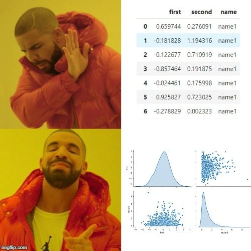

Data Visualization in Browser
Ville Voutilainen
Views expressed are those of the presenter.reveal.js . Tested to work in Chrome.
In this presentation
Quick motivation for data visualization.
Basics of creating visualizations in a web browser.
Hands-on example.
About me
Interested in promoting dataviz within finance. See my web page for more!
Vision is the strongest human sense
FreeImages.com/Henrik L.
>
Visual system sends in about 8x more info than other senses combined.
Kahnemans' two system: fast and inutive vs. slow and analytical. Vis communication supports particularly the former.
Advantages of dataviz
In many cases visualizations are the most effective way to convey information.
May reveal features that otherwise remain hidden.
Often more approachable than tables and equations.
"The greatest value of a picture is when it forces us to notice what we never expected to see." - John Tukey
Dataviz is used in business analytics, research, communication...

Created using imgflip.com.
Fair warning: Make visualizations that are useful, not ones that are only flashy!
Fair warning: Maximize ink-to-inforation ratio!
“We should think of data visualization not only as a way to present findings but also as a tool that helps us think.”
Dataviz in browser
The idea is to harness browser for presenting data. It involves binding data to the Document Object Model (DOM) that describes the browser window.
This will be done with Javascript .
One does not have to become a full-fledged web developer, but (in addition to JS) some HTML and CSS is a must.
Background viz: data about node size, loc, radius etc. is bound to objects in DOM.
Also: simple physics engine set up for interaction between nodes.
Trinity of web dev
HyperText Markup Language: Markup language defining content of a web page; HMTL elements are bulding blocks of a page.
Javascript: Scripting language enabling interaction in a webpage.
Cascading Style Sheets: Language used to set appearance of a markup document; specific styles to specific objects.
What do we need to get started?
Good editor (e.g. VSCode).
Modern web browser (e.g. Chrome). Not Explorer !
JS dependencies, e.g. d3 (others: Vega, Highcharts,...).
Optional: web server (e.g. simple localhost server).
Helpful: Basics understanding of HTTP.
Helpful: Basics of Scalable Vector Graphics (SVG) and/or HTML canvases.
If we page loads data from another, server is needed to enforce same-origin policy.
Hypertext Transfer Protocol (HTTP) is the foundation of data communication for the World Wide Web.
d3 is a Javascript library that can be used to manipulate web documents and bind data to them.
D3 Tips and Tricks v4.x .
d3-t-and-t-v4: "D3 is all about helping you to take information and make it more accessible to others via web browser".
Links data to object. Links static data to interactive displays.
Let's build an example where we...
... construct a web page from scratch...
... with an svg...
... which has a circle drawn on it...
... that has special styling...
... and moves when clicked!
Code here .
HTML page skeleton
<!DOCTYPE html>
<html>
<head>
<!-- Header of page: meta info, external imports. -->
</head>
<style>
<!-- Page styling: CSS goes in here! -->
</style>
<body>
<!-- Body of page: HTML or JS go in here! -->
</body>
</html>
Thank you!
@VilleEcon
vvoutilainen.github.io
References
Data visualization handbook (Koponen & Hildén 2019).
D3 Tips and Tricks v4.x (Malcom Maclean 2018).
The Visual Display of Quantitative Information (Edward Tufte 1983).